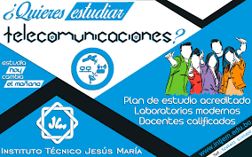
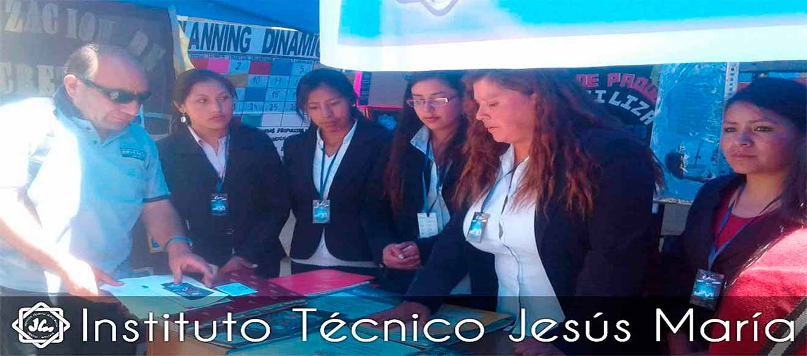

Somos el Instituto Técnico Superior Jesús María, una institución educativa comprometida con la formación integral de jóvenes y adultos en el ámbito técnico-tecnológico, con más de tres décadas de experiencia en la ciudad de Oruro, Bolivia. Desde nuestra fundación en 1991, trabajamos con vocación de servicio, inspirados por valores cristianos y principios humanistas, brindando educación de calidad, inclusiva y orientada al desarrollo profesional de nuestros estudiantes. Ofrecemos carreras técnicas superiores como Sistemas Informáticos, Secretariado Ejecutivo y Telecomunicaciones, formando profesionales competentes, éticos y preparados para enfrentar los retos del mundo laboral actual. Nuestra misión es impulsar la superación personal y social, especialmente de sectores con menos oportunidades, generando agentes de cambio que contribuyan activamente al progreso de su comunidad. En el Instituto Técnico Jesús María creemos que la educación es una herramienta poderosa de transformación, y por ello, cultivamos un ambiente de respeto, responsabilidad, innovación y excelencia académica.
Respondemos las preguntas mas frecuentes para ayudarte a construir tu futuro como profesional.
Gestión administrativa, organización de eventos y dominio de herramientas de oficina modernas.

Instalación, mantenimiento y gestión de sistemas de comunicación modernos y redes digitales.
Diseño de software, bases de datos, redes y soluciones tecnológicas empresariales.


